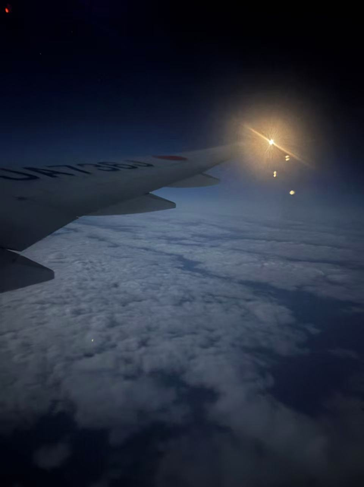
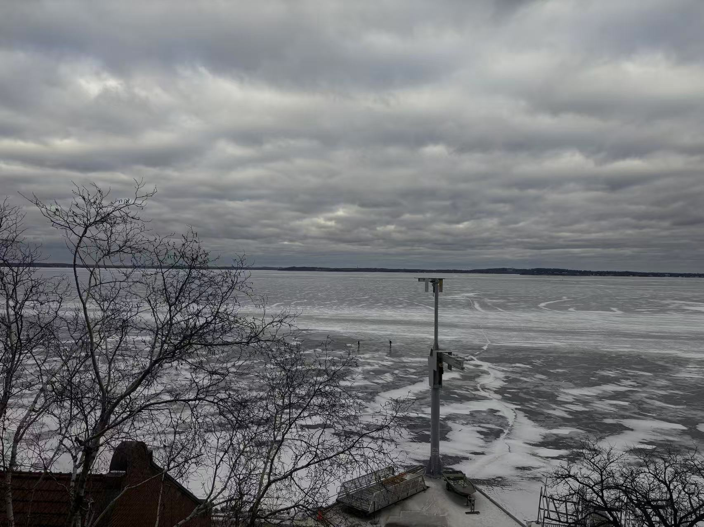
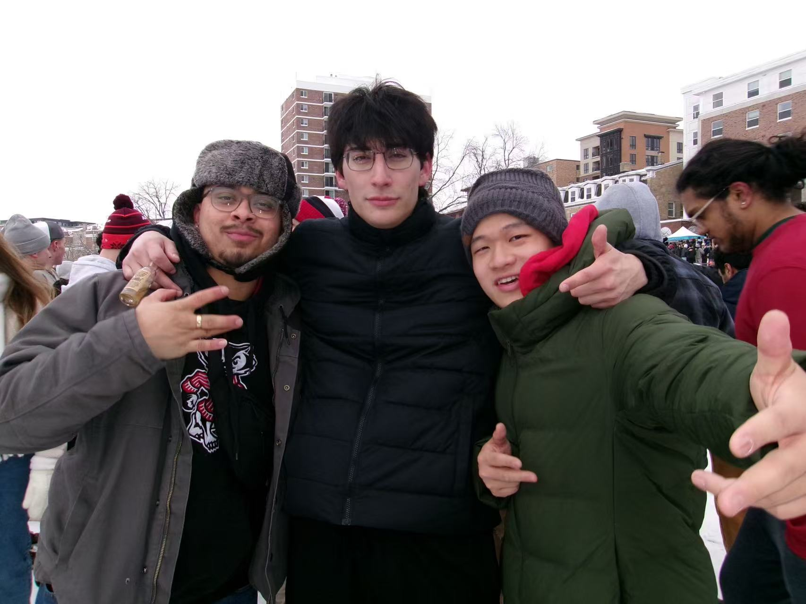
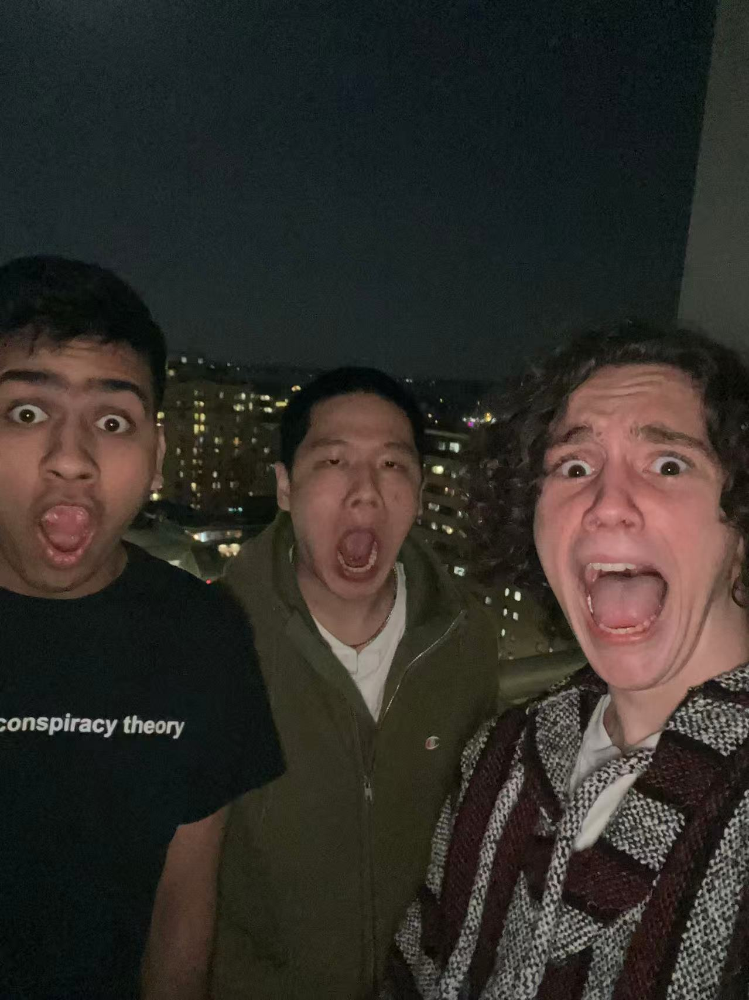
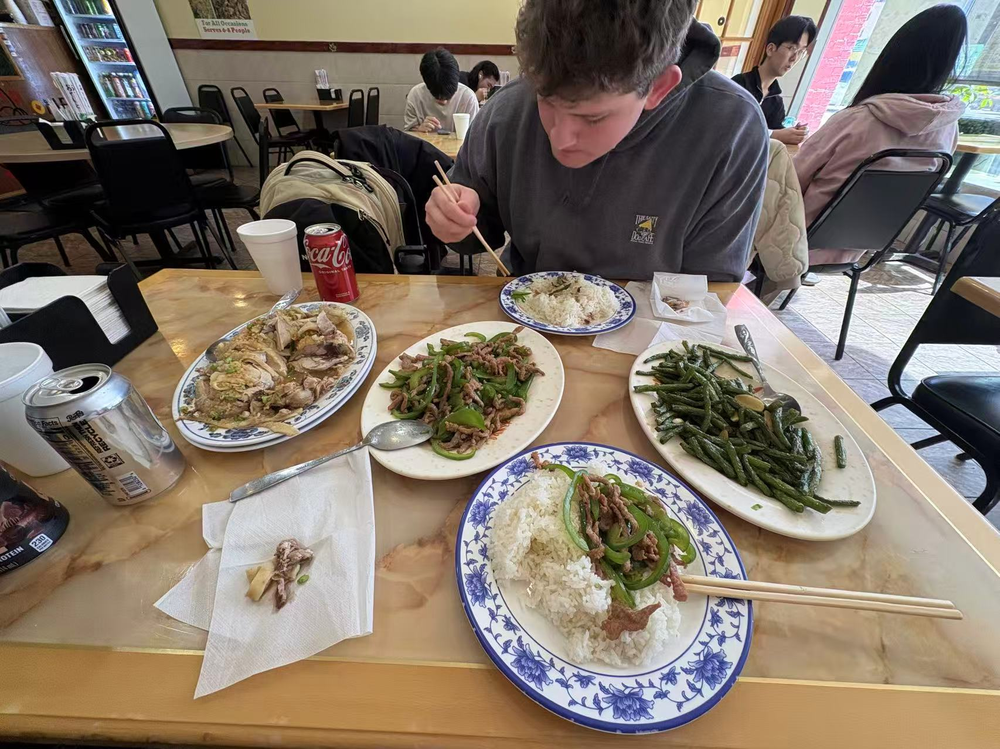

First Time in the U.S.
This is my first time being in the U.S.
Honestly, it's overwhelming. Everything's new to me.
I felt like a newborn baby facing a new climate, new traffic, new people, and a whole new culture.
The Weather and People
Not gonna lie, the weather in Madison is cold asf, but the people here are warm-hearted.
New Friends and Experiences
What I've gained the most is meeting a lot of dope brothers.
I hit up Lily's and Mifflin with my homies. Shoutout to RJ and Zane—my first friends in Madison. Y'all are some cool cats.
We hit the bars, played pool, tossed the football—it was so fun.
There's also a group of dudes always up to some tomfoolery—like UFC, KFC ice bucket challenge.
Big shoutout to my boys Big Sami, Rhett, and Abdul—we're a colorful crew.
We vibe out to music I'd never heard before—Marvin Gaye, Lil Yachty, 21 Savage, and more. We talk a lot about culture, language, milktea, and send each other with the dumbest, brain-melting reels ever.
Learning and Growing
And shoutout to my guy Jake—my slang teacher.
After every MATH240 class, we're both parched and can eat a horse, so we grab some grub and get stuffed.
Lowkey, sometimes I feel stuck between a rock and a hard place 'cause my English still holds me back in convos—but I know I'm improving.
Anyway, I f*cking love my TWINS!